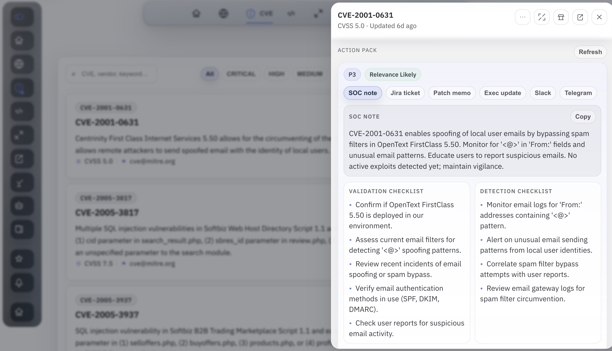

Vibin' Is Easy: It's All About Data and Design Now
I am DevOps by trade. AI did not turn me into a career frontend engineer, but it made responsive product work practical enough that I can take an app from rough MVP to something people can actually use.
For a long time, the bottleneck for me was not backend logic or automation. I could wire APIs, build the data layer, and get useful workflows running quickly. The part that slowed me down was the last mile: making the frontend feel clear, responsive, and intentional on real screens instead of only functional on my laptop.
That changed once AI became good enough to accelerate iteration. The important part is not magic prompts. The important part is having strong inputs. If the data is weak, the result is weak. If the design direction is vague, the UI becomes generic. But if the data is solid and the product shape is clear, AI can help close the gap between MVP and usable interface very quickly.
One example: security data
A good example is the security app I have been building around CVEs, exploits, advisories, KEV, and related signals. None of that data is rare. A lot of it is already public on the internet. The hard part is not finding it. The hard part is turning it into something that an analyst can scan fast, understand on desktop and mobile, and act on without reading five different sources every time.

That is where AI starts to feel practical. I can describe the layout I want, refine it quickly, and keep adjusting until the hierarchy feels right. I am still making product decisions. I am still reviewing the output. But the time from idea to presentable frontend is much shorter than it used to be.
Why AI triage fits this model
Vulnerability triage is a strong fit because the input data is already structured enough to work with. CVE records, exploit references, vendor advisories, and environment context can be merged into one view, then AI can help answer the questions an analyst actually cares about:
- What is this issue in plain language?
- Is there a real exploitability signal or is this mostly noise?
- Does it matter to our stack right now?
- What should we do next: patch, validate, detect, or escalate?

That is the shift I care about most. AI is not only writing code here. It is also becoming an interface layer over real data. Once the evidence is collected and normalized, AI can summarize, prioritize, and draft action packs in a way that saves time without hiding the underlying sources.

What changed for me
I still do not think this replaces strong frontend engineers. It does change what is accessible to people like me. As a DevOps engineer, I can now build the backend, shape the product, and get much further on the frontend than I could a year ago. For MVPs especially, that changes the speed of execution in a very real way.
Vibin' is easier now, but only when the data is good and the design is deliberate. That is the part people should pay more attention to.
I'm open to job opportunities. If you'd like to talk, email me at antonvkrylov@gmail.com.